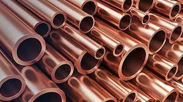

Ejercicio 4 - Consumo de servicios Web de precios del cobre
El cobre es uno de los metales que mejor conducen la electricidad (sólo lo supera la plata). Gracias a esto, a su ductilidad y a su maleabilidad, se ha convertido en el material más utilizado para fabricar cables eléctricos y otros elementos eléctricos y componentes electrónicos. Otra propiedad importante con la que cuenta es que puede ser reciclado sin perder ninguna de sus propiedades. Se lleva utilizando desde la prehistoria, ya que al hacer una aleación entre este metal y el estaño obtenemos el bronce, que fue útil para la realización de varias herramientas. A lo largo de la historia se fue utilizando también para hacer campanas, monedas y cañones. Hoy en día, el cobre sigue teniendo muchos usos (es el tercer metal más usado del mundo, sólo por detrás del hierro y el aluminio), como en la fabricación de utensilios de cocina, en algunas partes de los medios de transporte, decoraciones o para transmitir datos. Todo esto influye en el precio del cobre, el cual se muestra a continuación, comparado con varias monedas. Los datos se han obtenido a través de la API Metals-API, y los precios son por unidad de onza.

Los datos han sido cargados correctamente
- Los datos fueron recibidos en esta fecha: 2021-12-18
- Precio en euros: 0.2380741885737
- Precio en libras esterlinas: 0.20197792178427
- Precio en dólares: 0.26755019337817
- Precio en yen japonés: 30.441518651334
- Precio en leu rumano: 1.1790911940523
- Precio en rublo ruso: 19.86270617209
- Precio en dírham de los EAU: 0.9831819183566
- Precio en bitcoin: 5.7283043314405E-6